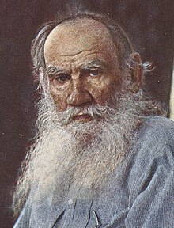

William Shakespeare
 William Shakespeare was an English playwright,
poet, and actor. He is widely regarded as the
greatest writer in the English language and
the world's pre-eminent dramatist. He is
often called England's national poet and the
"Bard of Avon".
William Shakespeare was an English playwright,
poet, and actor. He is widely regarded as the
greatest writer in the English language and
the world's pre-eminent dramatist. He is
often called England's national poet and the
"Bard of Avon".
Charles Dickens
 Charles John Huffam Dickens was an English
novelist and social critic who created some
of the world's best-known fictional characters,
and is regarded by many as the greatest
novelist of the Victorian era.
Charles John Huffam Dickens was an English
novelist and social critic who created some
of the world's best-known fictional characters,
and is regarded by many as the greatest
novelist of the Victorian era.
Leo Tolstoy
Count Lev Nikolayevich Tolstoy, usually referred to in English as Leo Tolstoy, was a Russian writer. He is regarded as one of the greatest and most influential authors of all time.